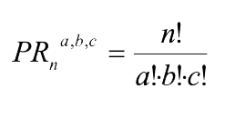
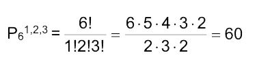

Permutaciones
Se llaman permutaciones de n objetos a las diferentes maneras en que sepueden ordenar esos n objetos; todas las permutaciones constan de losmismos n elementos, pero se consideran diferentes, por el orden en que se colocan éstos. Podemos encontrar distintos tipos de permutaciones:
Permutaciones SIN repetición:
Las permutaciones sin repetición de n elementos se definen como las distintas formas de ordenar todos esos elementos distintos, por lo que la única diferencia entre ellas es el orden de colocación de sus elementos.
El número de estas permutaciones es : Pn = n!
Ejemplo: De cuántas maneras distintas se pueden ordenar 5 amigos para tomar una foto, de modo que estos queden en linea.
En este ejemplo siempre nos importara el orden en que queden, ya que uno a la derecha o a la izquierda de otro será un orden distinto. En conclusión el número de ordenes distintos para que estos amigos se tomen la foto será P5 =5! = 120. Lo que indica que hay 120 posibilidades distintas de fotos para este grupo.
Permutaciones CON repetición:
Llamamos a las permutaciones con repetición de n elementos tomados de a en a, de b en b, de c en c, etc, cuando en los n elementos existen elementos repetidos (un elemento aparece a veces, otro b veces, otro c veces, etc) verificándose que a+b+c+...=n.
El número de estas permutaciones es:

Ejemplo: ¿Cuántos números de 6 cifras se pueden formar si en ellos siempre hay 1 uno, 2 dos y 3 tres?
En este ejemplo nos piden que formemos números donde hay algunos que se repiten, algunos de los posibles números podrían ser: 122333, 212333, 332123, etc.
Como vemos hay elementos que se repiten por ende estamos frente a una permutación con repetición por lo que la cantidad de palabras distintas estará dado por:

Permutaciones Circulares:
Hasta ahora hemos visto permutaciones lineales, en ellas, los elementos se disponen en una fila que tiene principio y fin.
Una situación diferente es la que se nos presenta al permutar, por ejemplo, objetos que se ordenan en forma circular.
Se llaman permutaciones circulares de n objetos a las diferentes maneras en que se pueden colocar esos n objetos alrededor de un círculo; en este tipo de permutaciones, lo que importa son las posiciones relativas de los objetos con respecto a ellos mismos y no las posiciones absolutas de los objetos en el círculo.
El número total de permutaciones circulares de n elementos distintos es: Pn(circulares) = (n - 1)!
Ejemplo: De cuántas maneras distintas se pueden sentar en una mesa redonda 7 personas.
Como nos dicen que deben sentarse en una mesa redonda la respuesta viene dada por una permutación circular, en este caso será P7(circular) = (7 - 1)! = 6! = 720 posibilidades distintas de sentarse en dicha mesa.
Obra publicada con Licencia Creative Commons Reconocimiento Compartir igual 4.0